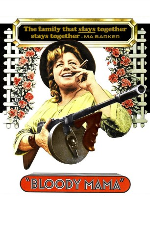
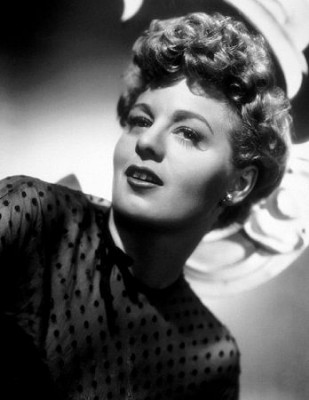
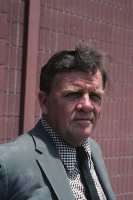
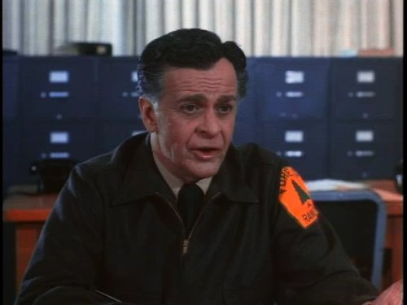

#3209 Bloody Mama
 
 IMDB-Wertung: 5.6 / 10
IMDB-Wertung: 5.6 / 10  Metascore: 0
Metascore: 0 
Ma Barker verläßt zur Zeit der Depression ihren schwächlichen Mann, um mit ihren vier gestörten Söhnen als Gangsterbande Vergeltung an der Gesellschaft zu üben. Raubend und mordend ziehen die Barkers durch das Amerika der späten 20er Jahre, bis sie schließlich von der Polizei gestellt und allesamt erschossen werden.
Jahr: 1970
Dauer: 86 Minuten
FSK: 18
Land: USA Studio: AIPTonspuren: DD2.0 - ,
Untertitel:
Auflösung: 1080p (1920x1080) Größe: 5847 MB
Genre: Drama, Krimi
Regisseur:  Roger Corman
Roger Corman
Drehbuch: Don Peters, Robert Thom, Robert Thom
Soundtrack: Don Randi
Darsteller:
-  Shelley Winters als 'Ma' Kate Barker
-  Pat Hingle als Sam Adams Pendlebury
 Don Stroud als Herman Barker
Don Stroud als Herman Barker- Diane Varsi als Mona Gibson
 Bruce Dern als Kevin Dirkman
Bruce Dern als Kevin Dirkman Robert De Niro als Lloyd Barker
Robert De Niro als Lloyd Barker- Robert Walden als Fred Barker
- Alex Nicol als George Barker
 Pamela Dunlap als Rembrandt
Pamela Dunlap als Rembrandt Scatman Crothers als Moses
Scatman Crothers als Moses-  Stacy Harris als Agent McClellan
- Lisa Linsky als Young Kate
- Clint Kimbrough als Arthur Barker
- Michael Fox als Dr. Roth
- Steve Mitchell als Sheriff
- Roy Idom als Ferryboat Passenger
- Alan Haufrect als Prisoner , uncredited
- Frank Snell als Federal Agent , uncredited
Datei: X:\FSK18-Western\Bloody Mama (1970, FSK18, 1920x1080).mkv seit 19.02.2016
Festplatte: FSK18
 Es gibt insgesamt 25 Filme in der Gruppe 'FSK18-Western'
Es gibt insgesamt 25 Filme in der Gruppe 'FSK18-Western'